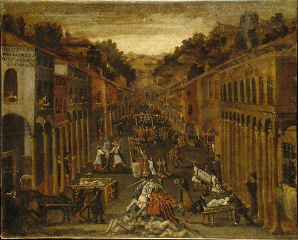
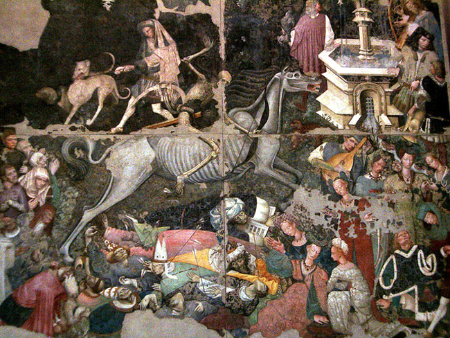
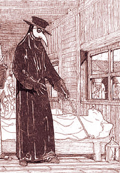

La Peste
Si sviluppa a partire dal 1347 al 1352,quando la diffusione delle epidemie era elevata.
Si può parlare di pandemia visto che la malattia si è espansa per più stati e continenti ovvero Asia, Europa, Nord Africa e in generale le coste del Mediterraneo.
Il batterio principalmente portato dalle navi di mercanti e soldati che entrati a contatto con le pulci dei topi durante i loro viaggi venivano contagiati; la pandemia raggiunse luoghi molto lontani dal suo luogo di origine anche per colpa dei topi che si infilavano nelle navi mercantili o nei carri di merci. La situazione peggiorò soprattutto per colpa della scarsa igiene mentre per la popolazione del tempo le cause furono gli astri e i terremoti, come punizione divina.
I contagiati avevano bubboni, cioè bolle di pus che si estendevano su tutto il corpo, in particolare nelle zone dei linfonodi ovvero sotto le ascelle,sul collo e sulla zona inguinale. Febbre persistente ed alta accompagnata da mal di testa,debolezza e nausea.

Storia
1331 L'epidemia nasce ai piedi dell'Himalaya, fra l'India e la Cina. Dove il batterio trovò condizioni climatiche e biologiche ideali per stabilirsi nei topi che popolavano le regioni.
1346 Dalla Cina il morbo raggiunge la colonia genovese di Caffa in Crimea.
1347 Dalla Crimea le navi genovesi sparsero il contagio, una volta arrivati al porto di Messina, a tutto il Mediterraneo
1348 In quest'anno la malattia si dilagò rapidamente in Africa, in Egitto, in Palestina, in Anatolia, in Siria, in Toscana, in Francia, in Spagna, in Inghilterra e in Germania.
1349 L'epidemia si espanse fino alla Corinzia, l'Ungheria, la Danimarca e la Scandinavia. Così tutta l'europa era appestata.
1352 Nell'anno successivo l'epidemia sembra attenuarsi fino quasi a spegnersi, ma la malattia è rimasta un male ricorrente.

La Peste nella letteratura
Si inizia a parlare di peste con il poeta ateniese Tucilide, che descrisse l'atmosfera cupa del periodo della peste del 431 a.c nella sua opera De Rerum Natura.
Questo tema viene ripreso successivamente da Giovanni Boccaccio nel 1353 nel Decameron dove descrive la peste del 1348; questa storia si apre con la drammatica immagine di morte che contrasta con il resto dell'opera e con l'accenno alle "graziosissime donne"a cui è dedicata.L'opera racconta la storia di 7 ragazze e 3 ragazzi che decidono di ritirarsi in campagna dove si racconteranno per dieci giorni una novella a testa in base al tema scelto dal re o dalla regina della giornata.
Manzoni riprende l'argomento della peste del 1630 che fu la causa di molti morti sopratutto in Lombardia, basandosi su documenti storici, nei capitoli 31 e 32 dei Promessi Sposi. Nella sua opera descrive un quadro generale delle condizioni di Milano durante la prima metà del 1600; come nell'episodio dove Renzo viene scambiato per un untore oppure quello della madre di Cecilia e dell'arrivo al lazzaretto. Manzoni riteneva che la peste fosse una punizione divina o un'opera demoniaca.
Alberto Camus pubblicò La Peste nel 1947, appena dopo il secondo conflitto mondiale, dove la peste viene presentata con una riflessione allegorica sul male e sul trauma della guerra. Inoltre viene presentata come un male che non viene mai debellato e che aspetta l'ambiente propizio a una nuova espansione.

La Peste nell'Arte
Affresco staccato e conservato nella galleria regionale di Palazzo Abatellis a Palermo. L'opera Il trionfo della morte che proviene dal cortile del Palazzo Sclafani, è considerata frutto di una diretta commissione reale di un artista straniero (spagnolo o provenzale)di cui non è noto il nome.
Il tema della morte era già molto difuso ma in questa opera d'arte viene rappresentata con particolare ossessione sui temi macabri e grotteschi, una caratteristica rara in Italia che ha fatto pensare alla mano di un maestro Transalbino.
L'affresco venne strappato in quattro parti ed attualmente si trova nell'ex cappella del palazzo.

Le Cure della Peste
Melassa- Sciroppo di zucchero
- Per moltissime malattie
- Dalla Grecia
- Ma deve fermentare 10 anni
- Espellere il sangue
- Sanguisughe (ricchi)
- Taglio delle vene (poveri)
- Aprire i linfonodi
- Ricoprirli con miscele di fiori, erbe, radici, e escrementi umani
- Bendare la zona medicata
- La malattia veniva dai cattivi odori
- Fiori e erbe profumate la allontanavano
- Si indossavano lunghe vesti di tessuto scivoloso
- Così che le particelle maligne scivolassero
- Bagno nelle urine per alleviare i dolori
- Raccomandabile anche berla
- Si raccoglieva e vendeva urina non infetta
- Dal medico inglese Thomas Vicary
- Eseguire i seguenti passi
- Spennare il sedere di una gallina viva
- Attaccarla, sempre viva, ai linfonodi del malato
- Appena si dovesse ammalare, pulirla
- Tutto fino alla guarigione del malato o della gallina
Le Fake News e la Peste
Con il termine fake news si intendono notizie false, messe in circolazione per interessi politico-ideologici, economici, o semplicemente perché si vogliono mettere alla berlina le istituzioni mediatiche.
- Dalla fine del Medioevo, intorno al 1430, fu alimentata una consuetudine che nei secoli raggiunse vette di crudeltà elevate solo fra ’600 e ’700, ben più tardi della fine del Medioevo. Per tre secoli si diede quindi la caccia alle streghe, migliaia di donne finirono al rogo, punite per i loro presunti traffici con il diavolo. Inoltre i gatti neri erano ritenuti aiutanti delle streghe,perciò tutti i gatti neri furono ucccisi. Con la conseguente diminuzione della popolazione felina, quella dei topi, reali portatori di peste aumentò favorendo il proliferare dell' epidemia
- La convinzione che nel Medioevo ci si lavasse poco deve essere nata dalla cattiva interpretazione di certe raccomandazioni ironiche ad evitare atteggiamenti grossolani, non lette con il giusto distacco. Perchè la vasca da bagno, anche nella semplice forma di tinozza, era un oggetto di mobilio comune; inoltre nella bella stagione, erano frequenti le scorribande dei più poveri al fiume ed i bagni termali erano molto comuni e assai frequentati dai più benestanti.
- In molti casi si diceva che le diagnosi si basavano su astrologia e teorie umorali che vedevano ogni alterazione della salute come squilibrio tra quattro umori rispettivamente di cervello, sangue, milza e fegato. Ma in realtà alcuni seguivano metodi molto più moderni come per esempio quello che prevedeva di curare con infusi di camomilla il dolore alle orecchie.

Statistiche e Considerazioni sulla peste
Nella Peste Nera, il numero di vittime è evidente,
basta infatti osservare i vari grafici sul numero di abitanti,
per capire gli effetti devastanti dell'epidemia.
Si nota infatti proprio un calo demografico netto tra l'inizio del '300 e quello del '400.
Ancora più importante però è notare la crescita del numero degli abitanti,
osservando che non ci sono più cali netti dopo il 1400, alla fine dell'epidemia,
e dall'affermarsi del rinascimento in poi.
Da ciò si può comprendere come il miglioramento dello stile di vita, anche a livello sanitario, porta a netti benefici.

L'AIDS
L'AIDS, detta anche sindrome da immunodeficenza, è derivata dal virus dell' HIV (virus dell'immunodeficenza), che attualmente non è curabile ma si può rallentare attraverso il trattamento con farmaci.
Con lo sviluppo della malattia il sistema immunitario si indebolisce e l'individuo viene contagiato da almeno un'altra infezione.

L'AIDS nella storia
Ai tempi l'AIDS dalla società era vista come una malattia altamente contagiosa, come può essere la lebbra.
A livello sociale essi erano considerati quasi come quelli colpiti dalla lebbra in passato, e di conseguenza gli fu vietato compiere qualsiasi atto normale pubblico, come può essere lavarsi le mani.
Prima di accettare i siero-positivi come malati, li guardavano come portatori di morte e quindi giudicati.
A livello di famiglia ciò comporta una perdita di reddito per le enormi spese mediche.
La chiesa era molto scettica sull'uso del preservativo ed impose delle lezioni di vita sulla morale dei fedeli.

L'AIDS nella letteratura
Attraverso i 4 cavallieri dell'Apocalisse peste,guerre,fame e morte
L'Apocalisse e la festa dei gay evidenzia le metafore dell'AIDS.
Il libro ripercorre fin dai primi anni l'epidemia dalle tappe fondamentali dell'attivismo gay a opera di movimenti di aggregazione con rilevanza globale.
Ma espone sopratutto una rapresentazioone della malattia in base alla letteratura anglo-americana attraverso opere antologiche come "The Gifts of the Body" di Rebecca Brown alla quale è dedicata la sezione conclusiva del lavoro.

L'AIDS nell'arte
- Keith Haring, fu un pittore e writer statunitense, famoso per opere di arte contemporanea. Una di queste, Safe sex, raffigura due uomini che praticano sesso in modo protetto rappresentando un invito a tutti per avere rapporti protetti così da non contrarre l'AIDS, di cui fu vittima anche lui portandolo a morire a soli 31 anni.
- "Ignorance = Fear" questa immagine è una critica alla paura comune dell'AIDS anche perchè in quel periodo c'era molta disinformazione sulla malattia e ciò fece nascere pregiudizi verso minoranze, di cui faceva parte anche lui ovvero gli omosessuali.

Le cure per l'AIDS
L'AIDS non ha una vera e propria cura attualmente, ma con alcuni trattamenti farmacologici, trovati nel 1996, si può rallentare l'avanzamento della malattia che può portare ad altre patologie grazie alla debole difesa immunitaria.

L'AIDS e le fakenews
Le fakenews vi erano già ai tempi della guerra fredda, come può essere quella in cui il comitato di sicurezza dell'Unione Sovietica presupponeva che l'AIDS fosse un'invensione del Fort Detrick in Maryland che conduceva test biologicinegli anni '50 e '60, allora tramite un giornale scrissero un articolo in cui incolpavano gli Stati Uniti della diffusione di tale malattia.
Dopo un po di tempo un segretario degli USA ordina ai sovietici di impedire la diffusione di tale fakenews.

Statistiche e commenti sull'AIDS
La storia dell'epidemia di HIV/AIDS viene iniziò nel 1981 quando fu scoperta una nuova malattia in alcuni pazienti negli Stati Uniti: in realtà l'infezione esisteva già da molti anni, ma era stata sempre scambiata per altro.
A differenza di tutte le altre epidemie fino ad allora conosciute essa portò nei casi diagnosticati ad alte percentuali di morte, vicine al 100%.
Dopo aver scoperto che questa malattia si trasmetteva attraverso rapporti sessuali e l'assunzione di sostanze stupefacenti, chi ne veniva colpito era discriminato e considerato un trasgressore della legge.
Nel 1996 si è scoperta una combinazione
di farmaci riesce a "immobilizzare" il
virus negli individui, bloccando lo
sviluppo della sindrome, ma senza eliminarla
del tutto, cronicizzando quindi l'infezione.
Tutt'altro che debellata, la sindrome da HIV è diventata endemica nei paesi sviluppati, dove è crollato il numero di decessi ma non quello dei contagi, mentre è ancora uno dei più gravi fattori di mortalità nei paesi in via di sviluppo, all'origine di gravi problematiche sociali, etiche, economiche e organizzative.

Sitografia
http://www.hiv1tat-vaccines.info/italian/need_for.htm http://www.studiarapido.it/la-peste-nera-del-trecento-causa-diffusione-conseguenze/#.WrSrqpch1PYhttps://it.wikipedia.org/wiki/File:People_living_with_HIV_AIDS_world_map.PNG
https://www.unicef.it/doc/6925/aids-dal-2000-raddoppiati-decessi-tra-adolescenti.htm
http://brunogf.ch/sebastiano2/Nuova_pagina_6.htm
https://www.farmacoecura.it/malattie/aids-hiv-sintomi-cause-e-trasmissione/#steps_3
http://www.quadernodiepidemiologia.it/epi/HomePage.html
http://www.rivista.sis-statistica.org/cms/?p=459
http://www.quadernodiepidemiologia.it/epi/freq/mal_epi.htm